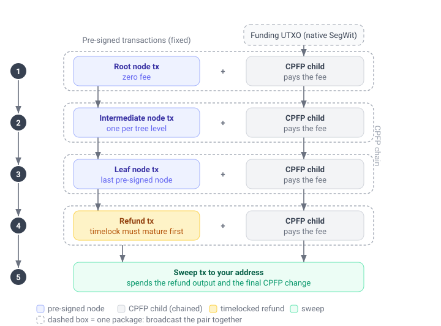
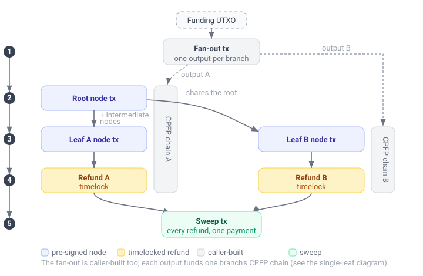

Unilateral exit
A unilateral exit moves your Spark balance onto the Bitcoin blockchain without needing the Spark operators to sign the withdrawal for you. It exists as a safety net: if the operators ever stop cooperating with normal withdrawals, you can still recover your funds on-chain.
Before you start
Three things are important to know before you build an exit:
- The exit data has to already be on the device. Quoting and building an exit read each leaf's pre-signed transactions from local storage, so both work with the operators unreachable. What they cannot do is obtain that data: a leaf can be exited this way only once it has been synced at least once while the operators were reachable. The SDK collects it as funds arrive, in the background where background services run and otherwise during
sync_walletsync_walletsyncWalletsyncWalletsyncWalletsyncWalletsyncWalletSyncWalletSyncWallet, which you can turn off withexit_chain_auto_fetch_enabledexit_chain_auto_fetch_enabledexitChainAutoFetchEnabledexitChainAutoFetchEnabledexitChainAutoFetchEnabledexitChainAutoFetchEnabledexitChainAutoFetchEnabledExitChainAutoFetchEnabledExitChainAutoFetchEnabled. Callsync_walletsync_walletsyncWalletsyncWalletsyncWalletsyncWalletsyncWalletSyncWalletSyncWalletbefore going offline to run the collection at a moment of your choosing rather than waiting on the background one. Once collected it can be kept outside the SDK's storage, see Back up the exit data. - You pay the fees from your own UTXO. The pre-signed transactions carry no fee, so each is fee-bumped with a child transaction (CPFP) funded by a Bitcoin UTXO you provide. That UTXO must be native SegWit (a witness-program script). P2WPKH and P2TR are handled by the built-in signer; any other witness program (for example a P2WSH multisig) works through the
CpfpFundingKind::CustomCpfpFundingKind.CUSTOMCpfpFundingKind.customCpfpFundingKind.CustomCpfpFundingKind.CustomCpfpFundingKind.CustomCpfpFundingKind.CustomCpfpFundingKindCustomCpfpFundingKind.Customfunding kind and a custom signer (see The signer). Legacy (non-SegWit) scripts are rejected. - You broadcast the transactions yourself. The SDK builds and signs the full set but never broadcasts. You send them to the network over time, in order, as their timelocks mature. See Broadcasting the transactions.
How it works
Your balance is held in a tree of pre-signed Bitcoin transactions. Each leaf is a portion of the balance. To move a leaf on-chain you broadcast the chain of transactions from the tree down to that leaf, then a refund transaction, then a final sweep to your destination address. Because the pre-signed transactions pay no fee on their own, each one is broadcast together with a CPFP child that pays its fee.
The exit is three calls:
prepare_unilateral_exitprepare_unilateral_exitprepareUnilateralExitprepareUnilateralExitprepareUnilateralExitprepareUnilateralExitprepareUnilateralExitPrepareUnilateralExitPrepareUnilateralExitquotes the exit: it picks which leaves to exit and reports the exact fee and how much to fund, without needing any funding UTXOs yet.unilateral_exitunilateral_exitunilateralExitunilateralExitunilateralExitunilateralExitunilateralExitUnilateralExitUnilateralExittakes that quote plus your funding UTXOs and a signer, and returns the complete, signed set of transactions to broadcast. Store what it returns.check_unilateral_exitcheck_unilateral_exitcheckUnilateralExitcheckUnilateralExitcheckUnilateralExitcheckUnilateralExitcheckUnilateralExitCheckUnilateralExitCheckUnilateralExittakes what you stored and tells you where the exit has got to and what to send next. Store what it returns, in place of what you had.
An exit runs for days, so you will call the third one many times: after each broadcast, and whenever you want to know how far along it is.
A single leaf
With one leaf there is no fan-out: your funding UTXO pays the fees directly. You broadcast the tree transactions top to bottom, each with its CPFP child as a package, then the refund once its timelock matures, then the sweep.

The blue transactions come pre-signed and fixed; you cannot change them. The grey CPFP children and the green sweep are built for you from the funding you supply, and are what actually pay the fees and deliver the funds to your address.
Multiple leaves
Exiting several leaves at once starts with a fan-out transaction that splits a single funding UTXO into one output per branch. Leaves that share ancestors in the tree share those transactions too, so a shared ancestor is broadcast only once. Every branch's refund is then pulled into a single sweep.

Leaf denominations and exit cost
Every leaf is exited by its own chain of transactions, so it carries its own on-chain fee whatever its value. The more leaves your balance is spread across, and the smaller they are, the more of it goes to fees on the way out, and the more low-value leaves an ExitLeafSelection::AutoExitLeafSelection.AUTOExitLeafSelection.autoExitLeafSelection.AutoExitLeafSelection.AutoExitLeafSelection.AutoExitLeafSelection.AutoExitLeafSelectionAutoExitLeafSelection.Auto exit abandons as uneconomical dust.
How the balance is split into leaves is governed by the SDK's leaf optimization, which balances everyday payment experience against unilateral exit value. More, smaller denominations let payments go out without leaf swaps, while fewer, larger denominations cost less to exit. The default leans toward payment experience, which suits most wallets, since a unilateral exit is a rare last resort. See Custom leaf optimization to understand this tradeoff and adjust it if your use case calls for it.
Quote the exit
Call prepare_unilateral_exitprepare_unilateral_exitprepareUnilateralExitprepareUnilateralExitprepareUnilateralExitprepareUnilateralExitprepareUnilateralExitPrepareUnilateralExitPrepareUnilateralExit with the target fee_rate_sat_per_vbytefee_rate_sat_per_vbytefeeRateSatPerVbytefeeRateSatPerVbytefeeRateSatPerVbytefeeRateSatPerVbytefeeRateSatPerVbyteFeeRateSatPerVbyteFeeRateSatPerVbyte, the funding_kindfunding_kindfundingKindfundingKindfundingKindfundingKindfundingKindFundingKindFundingKind of UTXO you will pay fees with, your destinationdestinationdestinationdestinationdestinationdestinationdestinationDestinationDestination address, and a selectionselectionselectionselectionselectionselectionselectionSelectionSelection. ExitLeafSelection::AutoExitLeafSelection.AUTOExitLeafSelection.autoExitLeafSelection.AutoExitLeafSelection.AutoExitLeafSelection.AutoExitLeafSelection.AutoExitLeafSelectionAutoExitLeafSelection.Auto exits every leaf worth more than its own exit cost; ExitLeafSelection::SpecificExitLeafSelection.SPECIFICExitLeafSelection.specificExitLeafSelection.SpecificExitLeafSelection.SpecificExitLeafSelection.SpecificExitLeafSelection.SpecificExitLeafSelectionSpecificExitLeafSelection.Specific exits exactly the leaves you name.
The quote returns a PrepareUnilateralExitResponsePrepareUnilateralExitResponsePrepareUnilateralExitResponsePrepareUnilateralExitResponsePrepareUnilateralExitResponsePrepareUnilateralExitResponsePrepareUnilateralExitResponsePrepareUnilateralExitResponsePrepareUnilateralExitResponse. Its fields tell you how much Bitcoin to gather and how to structure it:
recoverable_value_satrecoverable_value_satrecoverableValueSatrecoverableValueSatrecoverableValueSatrecoverableValueSatrecoverableValueSatRecoverableValueSatRecoverableValueSatis the total value of the selectedleavesleavesleavesleavesleavesleavesleavesLeavesLeaves, andtotal_fee_sattotal_fee_sattotalFeeSattotalFeeSattotalFeeSattotalFeeSattotalFeeSatTotalFeeSatTotalFeeSatis the on-chain fee to recover it, broken down into its three components below. Compare them to decide whether the exit is worth it at the current fee rate.single_utxo_funding_satsingle_utxo_funding_satsingleUtxoFundingSatsingleUtxoFundingSatsingleUtxoFundingSatsingleUtxoFundingSatsingleUtxoFundingSatSingleUtxoFundingSatSingleUtxoFundingSatis the simplest option: fund one UTXO of at least this many satoshis and the SDK fans it out across branches.per_branch_fundingper_branch_fundingperBranchFundingperBranchFundingperBranchFundingperBranchFundingperBranchFundingPerBranchFundingPerBranchFundinglets you skip the fan-out (and itsfanout_fee_satfanout_fee_satfanoutFeeSatfanoutFeeSatfanoutFeeSatfanoutFeeSatfanoutFeeSatFanoutFeeSatFanoutFeeSat) by funding one UTXO per branch, each of at least the amount in itsPerBranchFundingPerBranchFundingPerBranchFundingPerBranchFundingPerBranchFundingPerBranchFundingPerBranchFundingPerBranchFundingPerBranchFundingentry.
So you do not have to guess how much to send or how many UTXOs to prepare: the quote tells you both.
The fee components, and what arrives
An exit pays its mining fees from two different places, so total_fee_sattotal_fee_sattotalFeeSattotalFeeSattotalFeeSattotalFeeSattotalFeeSatTotalFeeSatTotalFeeSat comes with the split that says which is which. Both prepare_unilateral_exitprepare_unilateral_exitprepareUnilateralExitprepareUnilateralExitprepareUnilateralExitprepareUnilateralExitprepareUnilateralExitPrepareUnilateralExitPrepareUnilateralExit and unilateral_exitunilateral_exitunilateralExitunilateralExitunilateralExitunilateralExitunilateralExitUnilateralExitUnilateralExit report all four numbers.
| Component | Paid by |
|---|---|
cpfp_fee_satcpfp_fee_satcpfpFeeSatcpfpFeeSatcpfpFeeSatcpfpFeeSatcpfpFeeSatCpfpFeeSatCpfpFeeSat | The funding UTXOs, through the CPFP children that fee-bump the tree transactions |
fanout_fee_satfanout_fee_satfanoutFeeSatfanoutFeeSatfanoutFeeSatfanoutFeeSatfanoutFeeSatFanoutFeeSatFanoutFeeSat | The funding UTXO, by the fan-out transaction. Zero when there is no fan-out |
sweep_fee_satsweep_fee_satsweepFeeSatsweepFeeSatsweepFeeSatsweepFeeSatsweepFeeSatSweepFeeSatSweepFeeSat | The value being recovered, by the final sweep |
The three always add up to the total: cpfp_fee_satcpfp_fee_satcpfpFeeSatcpfpFeeSatcpfpFeeSatcpfpFeeSatcpfpFeeSatCpfpFeeSatCpfpFeeSat plus fanout_fee_satfanout_fee_satfanoutFeeSatfanoutFeeSatfanoutFeeSatfanoutFeeSatfanoutFeeSatFanoutFeeSatFanoutFeeSat plus sweep_fee_satsweep_fee_satsweepFeeSatsweepFeeSatsweepFeeSatsweepFeeSatsweepFeeSatSweepFeeSatSweepFeeSat is total_fee_sattotal_fee_sattotalFeeSattotalFeeSattotalFeeSattotalFeeSattotalFeeSatTotalFeeSatTotalFeeSat.
The first two come out of the Bitcoin you supplied as funding and do not reduce what the exit recovers. The third is different: the sweep spends the refunds and pays out what is left after its own fee, so it comes off the money on its way to your address.
What arrives at destinationdestinationdestinationdestinationdestinationdestinationdestinationDestinationDestination is therefore recoverable_value_satrecoverable_value_satrecoverableValueSatrecoverableValueSatrecoverableValueSatrecoverableValueSatrecoverableValueSatRecoverableValueSatRecoverableValueSat less sweep_fee_satsweep_fee_satsweepFeeSatsweepFeeSatsweepFeeSatsweepFeeSatsweepFeeSatSweepFeeSatSweepFeeSat, plus any funding that was not spent on fees. The sweep also collects the leftover change of the CPFP children it built, so unused funding is delivered to the same address rather than left behind.
What the exit costs in total is total_fee_sattotal_fee_sattotalFeeSattotalFeeSattotalFeeSattotalFeeSattotalFeeSatTotalFeeSatTotalFeeSat, across the funding UTXO and the recovered value together. Beginning with recoverable_value_satrecoverable_value_satrecoverableValueSatrecoverableValueSatrecoverableValueSatrecoverableValueSatrecoverableValueSatRecoverableValueSatRecoverableValueSat in Spark and a funding UTXO worth F, the destination ends up with those two added together, less total_fee_sattotal_fee_sattotalFeeSattotalFeeSattotalFeeSattotalFeeSattotalFeeSatTotalFeeSatTotalFeeSat.
recoverable_value_satrecoverable_value_satrecoverableValueSatrecoverableValueSatrecoverableValueSatrecoverableValueSatrecoverableValueSatRecoverableValueSatRecoverableValueSat less total_fee_sattotal_fee_sattotalFeeSattotalFeeSattotalFeeSattotalFeeSattotalFeeSatTotalFeeSatTotalFeeSat is not the arriving amount. It subtracts the CPFP and fan-out fees a second time, when they were already paid from the funding UTXO.
single_utxo_funding_satsingle_utxo_funding_satsingleUtxoFundingSatsingleUtxoFundingSatsingleUtxoFundingSatsingleUtxoFundingSatsingleUtxoFundingSatSingleUtxoFundingSatSingleUtxoFundingSat sits above cpfp_fee_satcpfp_fee_satcpfpFeeSatcpfpFeeSatcpfpFeeSatcpfpFeeSatcpfpFeeSatCpfpFeeSatCpfpFeeSat plus fanout_fee_satfanout_fee_satfanoutFeeSatfanoutFeeSatfanoutFeeSatfanoutFeeSatfanoutFeeSatFanoutFeeSatFanoutFeeSat on purpose. It carries the sweep fee and a small per-branch allowance as headroom, and both come back to you in the sweep.
Preparing also reads the chain, and exit_chain_stateexit_chain_stateexitChainStateexitChainStateexitChainStateexitChainStateexitChainStateExitChainStateExitChainState carries back what it found: which nodes are already on-chain, which refunds landed, and which of those have been swept. Pass the whole PrepareUnilateralExitResponsePrepareUnilateralExitResponsePrepareUnilateralExitResponsePrepareUnilateralExitResponsePrepareUnilateralExitResponsePrepareUnilateralExitResponsePrepareUnilateralExitResponsePrepareUnilateralExitResponsePrepareUnilateralExitResponse to unilateral_exitunilateral_exitunilateralExitunilateralExitunilateralExitunilateralExitunilateralExitUnilateralExitUnilateralExit unchanged, so the build covers only the steps still left. You can read it yourself to show how far an exit has got.
Under ExitLeafSelection::AutoExitLeafSelection.AUTOExitLeafSelection.autoExitLeafSelection.AutoExitLeafSelection.AutoExitLeafSelection.AutoExitLeafSelection.AutoExitLeafSelectionAutoExitLeafSelection.Auto a leaf is kept when its value exceeds its own exit cost, measured per leaf. That per-leaf measure does not include the shared fanout_fee_satfanout_fee_satfanoutFeeSatfanoutFeeSatfanoutFeeSatfanoutFeeSatfanoutFeeSatFanoutFeeSatFanoutFeeSat, which the single-UTXO path pays once for the whole exit. So when you fund a multi-leaf exit from a single UTXO, the fan-out fee can push the total above what you recover, even though every leaf looked profitable on its own.
Two rules keep an exit from ever costing more than it returns:
- Before funding, require
recoverable_value_satrecoverable_value_satrecoverableValueSatrecoverableValueSatrecoverableValueSatrecoverableValueSatrecoverableValueSatRecoverableValueSatRecoverableValueSatto exceedtotal_fee_sattotal_fee_sattotalFeeSattotalFeeSattotalFeeSattotalFeeSattotalFeeSatTotalFeeSatTotalFeeSat. These are the actual totals for the quote, fan-out fee included. If the margin is thin or negative, do not proceed as quoted. - Prefer per-branch funding. Funding one UTXO per branch (
per_branch_fundingper_branch_fundingperBranchFundingperBranchFundingperBranchFundingperBranchFundingperBranchFundingPerBranchFundingPerBranchFunding) skips the fan-out entirely, so there is no shared fee. BecauseExitLeafSelection::AutoExitLeafSelection.AUTOExitLeafSelection.autoExitLeafSelection.AutoExitLeafSelection.AutoExitLeafSelection.AutoExitLeafSelection.AutoExitLeafSelectionAutoExitLeafSelection.Autoalready keeps only leaves worth more than their own cost, a per-branch-funded auto exit is always net-positive.
If the single-UTXO total is not worth it, either fund per branch, or narrow the set: re-quote with ExitLeafSelection::SpecificExitLeafSelection.SPECIFICExitLeafSelection.specificExitLeafSelection.SpecificExitLeafSelection.SpecificExitLeafSelection.SpecificExitLeafSelection.SpecificExitLeafSelectionSpecificExitLeafSelection.Specific naming only the higher-value leaves (dropping the marginal ones removes their cost and can turn the total positive), or wait for a lower fee rate.
If nothing is selected (under ExitLeafSelection::AutoExitLeafSelection.AUTOExitLeafSelection.autoExitLeafSelection.AutoExitLeafSelection.AutoExitLeafSelection.AutoExitLeafSelection.AutoExitLeafSelectionAutoExitLeafSelection.Auto no leaf is worth exiting at the given fee rate, or there is nothing to exit) the response comes back empty rather than as an error. Check leavesleavesleavesleavesleavesleavesleavesLeavesLeaves before gathering funding.
let quote = sdk
.prepare_unilateral_exit(PrepareUnilateralExitRequest {
fee_rate_sat_per_vbyte: 2,
funding_kind: CpfpFundingKind::P2wpkh,
destination: "bc1q...your-destination-address".to_string(),
selection: ExitLeafSelection::Auto,
})
.await?;
println!(
"Recovering {} sats for {} sats in fees",
quote.recoverable_value_sat, quote.total_fee_sat
);
println!("Fund a single UTXO of at least {} sats", quote.single_utxo_funding_sat);let quote = try await sdk.prepareUnilateralExit(
request: PrepareUnilateralExitRequest(
feeRateSatPerVbyte: 2,
fundingKind: .p2wpkh,
destination: "bc1q...your-destination-address",
selection: .auto
)
)
print("Recovering \(quote.recoverableValueSat) sats for \(quote.totalFeeSat) sats in fees")
print("Fund a single UTXO of at least \(quote.singleUtxoFundingSat) sats")
val quote = sdk.prepareUnilateralExit(
PrepareUnilateralExitRequest(
feeRateSatPerVbyte = 2u,
fundingKind = CpfpFundingKind.P2wpkh,
destination = "bc1q...your-destination-address",
selection = ExitLeafSelection.Auto
)
)
println("Recovering ${quote.recoverableValueSat} sats for ${quote.totalFeeSat} sats in fees")
println("Fund a single UTXO of at least ${quote.singleUtxoFundingSat} sats")
var quote = await sdk.PrepareUnilateralExit(
request: new PrepareUnilateralExitRequest(
feeRateSatPerVbyte: 2,
fundingKind: new CpfpFundingKind.P2wpkh(),
destination: "bc1q...your-destination-address",
selection: new ExitLeafSelection.Auto()
)
);
Console.WriteLine($"Recovering {quote.recoverableValueSat} sats for {quote.totalFeeSat} sats in fees");
Console.WriteLine($"Fund a single UTXO of at least {quote.singleUtxoFundingSat} sats");
const quote = await sdk.prepareUnilateralExit({
feeRateSatPerVbyte: 2,
fundingKind: { type: 'p2wpkh' },
destination: 'bc1q...your-destination-address',
selection: { type: 'auto' }
})
console.log(`Recovering ${quote.recoverableValueSat} sats for ${quote.totalFeeSat} sats in fees`)
console.log(`Fund a single UTXO of at least ${quote.singleUtxoFundingSat} sats`)
const quote = await sdk.prepareUnilateralExit({
feeRateSatPerVbyte: BigInt(2),
fundingKind: new CpfpFundingKind.P2wpkh(),
destination: 'bc1q...your-destination-address',
selection: new ExitLeafSelection.Auto()
})
console.log(`Recovering ${quote.recoverableValueSat} sats for ${quote.totalFeeSat} sats in fees`)
console.log(`Fund a single UTXO of at least ${quote.singleUtxoFundingSat} sats`)
PrepareUnilateralExitRequest request = PrepareUnilateralExitRequest(
feeRateSatPerVbyte: BigInt.from(2),
fundingKind: const CpfpFundingKind.p2Wpkh(),
destination: "bc1q...your-destination-address",
selection: const ExitLeafSelection.auto(),
);
PrepareUnilateralExitResponse quote = await sdk.prepareUnilateralExit(request: request);
print("Recovering ${quote.recoverableValueSat} sats for ${quote.totalFeeSat} sats in fees");
print("Fund a single UTXO of at least ${quote.singleUtxoFundingSat} sats");
quote = await sdk.prepare_unilateral_exit(
request=PrepareUnilateralExitRequest(
fee_rate_sat_per_vbyte=2,
funding_kind=CpfpFundingKind.P2WPKH(),
destination="bc1q...your-destination-address",
selection=ExitLeafSelection.AUTO(),
),
)
logging.debug(
f"Recovering {quote.recoverable_value_sat} sats "
f"for {quote.total_fee_sat} sats in fees"
)
logging.debug(f"Fund a single UTXO of at least {quote.single_utxo_funding_sat} sats")
quote, err := sdk.PrepareUnilateralExit(breez_sdk_spark.PrepareUnilateralExitRequest{
FeeRateSatPerVbyte: 2,
FundingKind: breez_sdk_spark.CpfpFundingKindP2wpkh{},
Destination: "bc1q...your-destination-address",
Selection: breez_sdk_spark.ExitLeafSelectionAuto{},
})
if err != nil {
return nil, err
}
log.Printf("Recovering %d sats for %d sats in fees", quote.RecoverableValueSat, quote.TotalFeeSat)
log.Printf("Fund a single UTXO of at least %d sats", quote.SingleUtxoFundingSat)
Build the exit
Gather funding that meets the quote, then call unilateral_exitunilateral_exitunilateralExitunilateralExitunilateralExitunilateralExitunilateralExitUnilateralExitUnilateralExit with the quote, your real CpfpInputCpfpInputCpfpInputCpfpInputCpfpInputCpfpInputCpfpInputCpfpInputCpfpInput funding UTXOs, and a signer. It returns a UnilateralExitResponseUnilateralExitResponseUnilateralExitResponseUnilateralExitResponseUnilateralExitResponseUnilateralExitResponseUnilateralExitResponseUnilateralExitResponseUnilateralExitResponse with the actual total_fee_sattotal_fee_sattotalFeeSattotalFeeSattotalFeeSattotalFeeSattotalFeeSatTotalFeeSatTotalFeeSat and the full transaction set.
If the funding is below what the exit needs it returns SdkError::InsufficientCpfpFundsSdkError.INSUFFICIENT_CPFP_FUNDSSdkError.insufficientCpfpFundsSdkError.InsufficientCpfpFundsSdkError.InsufficientCpfpFundsSdkError.InsufficientCpfpFundsSdkError.InsufficientCpfpFundsSdkErrorInsufficientCpfpFundsSdkError.InsufficientCpfpFunds, naming the amount. A UTXO an earlier attempt already spent is not an error: see Funding a second attempt.
A very thin-margin exit can fail even when the funding is sufficient: if the recoverable value net of fees would leave the swept output below the destination address's dust limit, the sweep cannot be built and the exit fails. Exit higher-value leaves with ExitLeafSelection::SpecificExitLeafSelection.SPECIFICExitLeafSelection.specificExitLeafSelection.SpecificExitLeafSelection.SpecificExitLeafSelection.SpecificExitLeafSelection.SpecificExitLeafSelectionSpecificExitLeafSelection.Specific, lower the fee_rate_sat_per_vbytefee_rate_sat_per_vbytefeeRateSatPerVbytefeeRateSatPerVbytefeeRateSatPerVbytefeeRateSatPerVbytefeeRateSatPerVbyteFeeRateSatPerVbyteFeeRateSatPerVbyte, or wait for a cheaper fee rate.
The set it builds depends on what is already on-chain. Because each CPFP child spends the previous one, the exit is one connected chain, so to continue it correctly the SDK reads confirmed on-chain state through its chain service: a step already confirmed comes back as ExitTransactionStatus::ConfirmedExitTransactionStatus.CONFIRMEDExitTransactionStatus.confirmedExitTransactionStatus.ConfirmedExitTransactionStatus.ConfirmedExitTransactionStatus.ConfirmedExitTransactionStatus.ConfirmedExitTransactionStatusConfirmedExitTransactionStatus.Confirmed and is not rebuilt. If the chain service cannot resolve a step, the SDK falls back to the status the operators reported: a node the operators already consider on-chain is left as-is rather than fee-bumped (bumping an already-confirmed node would invalidate the rest of the chain), and any node whose state still cannot be determined comes back as ExitTransactionStatus::UnverifiedExitTransactionStatus.UNVERIFIEDExitTransactionStatus.unverifiedExitTransactionStatus.UnverifiedExitTransactionStatus.UnverifiedExitTransactionStatus.UnverifiedExitTransactionStatus.UnverifiedExitTransactionStatusUnverifiedExitTransactionStatus.Unverified and is treated as not yet confirmed rather than failing the build. You still get the full set back; broadcasting an already-confirmed transaction is harmless, and re-running once the chain service recovers resolves the status. For a more reliable source you can supply your own chain service (see Customizing the SDK).
let secret_key_bytes: Vec<u8> = hex::decode("your-secret-key-hex")?;
let signer = signer::single_key_cpfp_signer(secret_key_bytes)?;
let response = sdk
.unilateral_exit(
UnilateralExitRequest {
prepared: quote,
funding_inputs: vec![CpfpInput::P2wpkh {
txid: "your-utxo-txid".to_string(),
vout: 0,
value: 50_000,
pubkey: "your-compressed-pubkey-hex".to_string(),
}],
},
signer,
)
.await?;
// Store the whole response: it is the only record of the exit.
for tx in &response.transactions {
if let Some(blocks) = tx.csv_timelock_blocks {
println!("{}: wait {} blocks after its parents confirm", tx.txid, blocks);
}
}let secretKeyBytes = Data(hexString: "your-secret-key-hex")!
let signer = try singleKeyCpfpSigner(secretKeyBytes: secretKeyBytes)
let response = try await sdk.unilateralExit(
request: UnilateralExitRequest(
prepared: quote,
fundingInputs: [
.p2wpkh(
txid: "your-utxo-txid",
vout: 0,
value: 50_000,
pubkey: "your-compressed-pubkey-hex"
)
]
),
signer: signer
)
for tx in response.transactions {
if let blocks = tx.csvTimelockBlocks {
print("\(tx.txid): wait \(blocks) blocks after its parents confirm")
}
}
try {
val secretKeyBytes = "your-secret-key-hex".hexToByteArray()
val signer = singleKeyCpfpSigner(secretKeyBytes)
val response = sdk.unilateralExit(
UnilateralExitRequest(
prepared = quote,
fundingInputs = listOf(
CpfpInput.P2wpkh(
txid = "your-utxo-txid",
vout = 0u,
value = 50_000u,
pubkey = "your-compressed-pubkey-hex"
)
)
),
signer
)
for (tx in response.transactions) {
tx.csvTimelockBlocks?.let { blocks ->
println("${tx.txid}: wait $blocks blocks after its parents confirm")
}
}
} catch (e: Exception) {
// handle error
}
var secretKeyBytes = Convert.FromHexString("your-secret-key-hex");
var signer = BreezSdkSparkMethods.SingleKeyCpfpSigner(secretKeyBytes);
var response = await sdk.UnilateralExit(
request: new UnilateralExitRequest(
prepared: quote,
fundingInputs: new CpfpInput[]
{
new CpfpInput.P2wpkh(
txid: "your-utxo-txid",
vout: 0,
value: 50_000,
pubkey: "your-compressed-pubkey-hex"
)
}
),
signer: signer
);
foreach (var tx in response.transactions)
{
if (tx.csvTimelockBlocks != null)
{
Console.WriteLine($"{tx.txid}: wait {tx.csvTimelockBlocks} blocks after its parents confirm");
}
}
const secretKeyBytes = Buffer.from('your-secret-key-hex', 'hex')
const signer = singleKeyCpfpSigner(secretKeyBytes)
const response = await sdk.unilateralExit(
{
prepared: quote,
fundingInputs: [{
type: 'p2wpkh',
txid: 'your-utxo-txid',
vout: 0,
value: 50_000,
pubkey: 'your-compressed-pubkey-hex'
}]
},
signer
)
for (const tx of response.transactions) {
if (tx.csvTimelockBlocks != null) {
console.log(`${tx.txid}: wait ${tx.csvTimelockBlocks} blocks after its parents confirm`)
}
}
const secretKeyBytes = Buffer.from('your-secret-key-hex', 'hex')
// Buffer.buffer is a shared pool slab; slice to this key's own bytes.
const signer = singleKeyCpfpSigner(
secretKeyBytes.buffer.slice(
secretKeyBytes.byteOffset,
secretKeyBytes.byteOffset + secretKeyBytes.byteLength
)
)
const response = await sdk.unilateralExit(
{
prepared: quote,
fundingInputs: [
new CpfpInput.P2wpkh({
txid: 'your-utxo-txid',
vout: 0,
value: BigInt(50_000),
pubkey: 'your-compressed-pubkey-hex'
})
]
},
signer
)
for (const tx of response.transactions) {
if (tx.csvTimelockBlocks != null) {
console.log(`${tx.txid}: wait ${tx.csvTimelockBlocks} blocks after its parents confirm`)
}
}
List<int> secretKeyBytes = hex.decode("your-secret-key-hex");
UnilateralExitResponse response = await sdk.unilateralExit(
request: UnilateralExitRequest(
prepared: quote,
fundingInputs: [
CpfpInput.p2Wpkh(
txid: "your-utxo-txid",
vout: 0,
value: BigInt.from(50000),
pubkey: "your-compressed-pubkey-hex",
),
],
),
signerSecretKey: Uint8List.fromList(secretKeyBytes),
);
for (UnilateralExitTransaction tx in response.transactions) {
if (tx.csvTimelockBlocks != null) {
print("${tx.txid}: wait ${tx.csvTimelockBlocks} blocks after its parents confirm");
}
}
secret_key_bytes = bytes.fromhex("your-secret-key-hex")
signer = single_key_cpfp_signer(secret_key_bytes=secret_key_bytes)
response = await sdk.unilateral_exit(
request=UnilateralExitRequest(
prepared=quote,
funding_inputs=[
CpfpInput.P2WPKH( # type: ignore[list-item]
txid="your-utxo-txid",
vout=0,
value=50_000,
pubkey="your-compressed-pubkey-hex",
)
],
),
signer=signer,
)
for tx in response.transactions:
if tx.csv_timelock_blocks is not None:
logging.debug(
f"{tx.txid}: wait {tx.csv_timelock_blocks} blocks after its parents confirm"
)
secretKeyBytes, err := hex.DecodeString("your-secret-key-hex")
if err != nil {
return err
}
signer, err := breez_sdk_spark.SingleKeyCpfpSigner(secretKeyBytes)
if err != nil {
return err
}
response, err := sdk.UnilateralExit(breez_sdk_spark.UnilateralExitRequest{
Prepared: quote,
FundingInputs: []breez_sdk_spark.CpfpInput{
breez_sdk_spark.CpfpInputP2wpkh{
Txid: "your-utxo-txid",
Vout: 0,
Value: 50_000,
Pubkey: "your-compressed-pubkey-hex",
},
},
}, signer)
if err != nil {
return err
}
for _, tx := range response.Transactions {
if tx.CsvTimelockBlocks != nil {
fmt.Printf("%s: wait %d blocks after its parents confirm\n", tx.Txid, *tx.CsvTimelockBlocks)
}
}
The signer
The CPFP children and the fan-out spend your funding UTXOs, so they have to be signed. The SDK does not hold your funding keys; it hands each unsigned transaction to a signer you provide.
The built-in single-key signer covers the common case: it signs P2WPKH and P2TR inputs from one secret key. For CpfpInput::P2trCpfpInput.P2TRCpfpInput.p2trCpfpInput.P2trCpfpInput.P2trCpfpInput.P2trCpfpInput.P2trCpfpInputP2trCpfpInput.P2tr funding, pass the internal, untweaked (BIP86) key, not the tweaked on-chain output key: the tweaked key derives a scriptPubKey that does not match the UTXO, so the transaction is rejected at broadcast. For anything else (a multisig, a hardware wallet, or keeping key material out of the SDK entirely) implement the CpfpSignerCpfpSignerCpfpSignerCpfpSignerCpfpSignerCpfpSignerCpfpSignerCpfpSignerCpfpSigner interface and describe the funding with CpfpFundingKind::CustomCpfpFundingKind.CUSTOMCpfpFundingKind.customCpfpFundingKind.CustomCpfpFundingKind.CustomCpfpFundingKind.CustomCpfpFundingKind.CustomCpfpFundingKindCustomCpfpFundingKind.Custom (in the quote) and CpfpInput::CustomCpfpInput.CUSTOMCpfpInput.customCpfpInput.CustomCpfpInput.CustomCpfpInput.CustomCpfpInput.CustomCpfpInputCustomCpfpInput.Custom (in the build). Those carry the funding script_pubkey_hexscript_pubkey_hexscriptPubkeyHexscriptPubkeyHexscriptPubkeyHexscriptPubkeyHexscriptPubkeyHexScriptPubkeyHexScriptPubkeyHex and an upper-bound signed_input_weightsigned_input_weightsignedInputWeightsignedInputWeightsignedInputWeightsignedInputWeightsignedInputWeightSignedInputWeightSignedInputWeight so the fee stays exact for any witness program. The signer receives a serialized PSBT, signs the inputs that are not already finalized, and returns the serialized signed PSBT:
Whichever signer you use, the funding inputs must be native SegWit (a witness-program script; P2WPKH or P2TR with the built-in signer, any other witness program with a custom one). The exit refers to each transaction by an id it computes before signing, which only stays stable when the signature lives in the witness (native SegWit) rather than in the input script; legacy scripts are rejected, so your signer only ever has to sign native SegWit inputs.
struct MyCpfpSigner;
#[async_trait::async_trait]
impl signer::CpfpSigner for MyCpfpSigner {
async fn sign_psbt(&self, psbt_bytes: Vec<u8>) -> Result<Vec<u8>, SignerError> {
let signed_psbt_bytes = sign_psbt_with_your_keys(psbt_bytes)?;
Ok(signed_psbt_bytes)
}
}
fn sign_psbt_with_your_keys(psbt_bytes: Vec<u8>) -> Result<Vec<u8>, SignerError> {
Ok(psbt_bytes)
}class CustomCpfpSigner: CpfpSigner {
func signPsbt(psbtBytes: Data) async throws -> Data {
return try await signPsbtWithYourKeys(psbtBytes: psbtBytes)
}
private func signPsbtWithYourKeys(psbtBytes: Data) async throws -> Data {
return psbtBytes
}
}
class MyCpfpSigner : CpfpSigner {
override suspend fun signPsbt(psbtBytes: ByteArray): ByteArray {
return signPsbtWithYourKeys(psbtBytes)
}
private fun signPsbtWithYourKeys(psbtBytes: ByteArray): ByteArray {
return psbtBytes
}
}
class MyCpfpSigner : CpfpSigner
{
public async Task<byte[]> SignPsbt(byte[] psbtBytes)
{
return await SignPsbtWithYourKeys(psbtBytes);
}
async Task<byte[]> SignPsbtWithYourKeys(byte[] psbtBytes)
{
return await Task.FromResult(psbtBytes);
}
}
class CustomCpfpSigner implements CpfpSigner {
async signPsbt (psbtBytes: Uint8Array): Promise<Uint8Array> {
return await signPsbtWithYourKeys(psbtBytes)
}
}
const signPsbtWithYourKeys = async (psbtBytes: Uint8Array): Promise<Uint8Array> => {
return psbtBytes
}
class CustomCpfpSigner {
signPsbt = async (psbtBytes: ArrayBuffer): Promise<ArrayBuffer> => {
return await signPsbtWithYourKeys(psbtBytes)
}
}
const signPsbtWithYourKeys = async (psbtBytes: ArrayBuffer): Promise<ArrayBuffer> => {
return psbtBytes
}
Future<void> buildExitWithSigner(BreezSdk sdk, PrepareUnilateralExitResponse quote) async {
// Flutter cannot pass a foreign CpfpSigner, so it takes a signPsbt callback.
UnilateralExitResponse response = await sdk.unilateralExitWithSigner(
request: UnilateralExitRequest(
prepared: quote,
fundingInputs: [
CpfpInput.p2Wpkh(
txid: "your-utxo-txid",
vout: 0,
value: BigInt.from(50000),
pubkey: "your-compressed-pubkey-hex",
),
],
),
signPsbt: (Uint8List psbtBytes) async {
return signPsbtWithYourKeys(psbtBytes);
},
);
for (UnilateralExitTransaction tx in response.transactions) {
if (tx.csvTimelockBlocks != null) {
print("${tx.txid}: wait ${tx.csvTimelockBlocks} blocks after its parents confirm");
}
}
}
// Receives the serialized PSBT, signs the inputs that are not already
// finalized, and returns the serialized signed PSBT.
Future<Uint8List> signPsbtWithYourKeys(Uint8List psbtBytes) async {
return psbtBytes;
}
class CustomCpfpSigner(CpfpSigner):
async def sign_psbt(self, psbt_bytes: bytes) -> bytes:
return sign_psbt_with_your_keys(psbt_bytes)
def sign_psbt_with_your_keys(psbt_bytes: bytes) -> bytes:
raise NotImplementedError("Sign the PSBT's non-finalized inputs with your keys")
type MyCpfpSigner struct{}
func (MyCpfpSigner) SignPsbt(psbtBytes []byte) ([]byte, error) {
return signPsbtWithYourKeys(psbtBytes)
}
func signPsbtWithYourKeys(psbtBytes []byte) ([]byte, error) {
return psbtBytes, nil
}
Flutter
Flutter cannot pass a foreignCpfpSigner, so it exposes two exit calls. unilateralExit takes the funding secret key bytes and uses the built-in single-key signer. unilateralExitWithSigner takes a signPsbt callback that receives the serialized PSBT, signs the inputs that are not already finalized (any scheme), and returns the serialized signed PSBT.
Store the response
Store the whole UnilateralExitResponseUnilateralExitResponseUnilateralExitResponseUnilateralExitResponseUnilateralExitResponseUnilateralExitResponseUnilateralExitResponseUnilateralExitResponseUnilateralExitResponse as soon as you get it, before you broadcast anything. It is the only record of the exit: the signed transactions, the leaves they recover, and the funding you paid with. Losing it means losing the ability to follow or finish the exit, even though the money is still recoverable.
Store the one check_unilateral_exitcheck_unilateral_exitcheckUnilateralExitcheckUnilateralExitcheckUnilateralExitcheckUnilateralExitcheckUnilateralExitCheckUnilateralExitCheckUnilateralExit returns in its place each time you call it. Nothing else needs keeping alongside it.
Broadcast the transactions
The SDK does not broadcast anything. transactionstransactionstransactionstransactionstransactionstransactionstransactionsTransactionsTransactions is the complete, signed set in valid broadcast order, and it is yours to send to the network over time. Broadcast each transaction whose statusstatusstatusstatusstatusstatusstatusStatusStatus is ExitTransactionStatus::ReadyExitTransactionStatus.READYExitTransactionStatus.readyExitTransactionStatus.ReadyExitTransactionStatus.ReadyExitTransactionStatus.ReadyExitTransactionStatus.ReadyExitTransactionStatusReadyExitTransactionStatus.Ready, and leave the rest until a later check_unilateral_exitcheck_unilateral_exitcheckUnilateralExitcheckUnilateralExitcheckUnilateralExitcheckUnilateralExitcheckUnilateralExitCheckUnilateralExitCheckUnilateralExit reports them ready. Because of the timelocks in the tree, a full exit can span several days.
A step left waiting changes who pays its fee
Each step of the exit becomes valid at a certain block. About 50 blocks later, which is roughly eight hours, a second version of that same step becomes valid too. Spark's watchtowers hold that second version as a safety net for a wallet that goes offline part-way through an exit, and can send it to the network once it unlocks.
Both versions move the same money to the same place. What differs is where the mining fee comes from. The version the SDK builds for you is paid for by the funding UTXO you supplied, at the fee rate you asked for. The watchtower's version has its fee built in and takes it from the leaf itself, so that fee comes off the amount arriving at your address instead of out of your funding, at a rate you have no say in.
The window runs per step, from the moment that step's timelock matures. An exit whose steps go out as they become ExitTransactionStatus::ReadyExitTransactionStatus.READYExitTransactionStatus.readyExitTransactionStatus.ReadyExitTransactionStatus.ReadyExitTransactionStatus.ReadyExitTransactionStatus.ReadyExitTransactionStatusReadyExitTransactionStatus.Ready keeps the fee split the quote described; one that sits unbroadcast for a day or more can end up paying for parts of itself out of the money it is recovering.
Broadcast each package together
Most steps come as a pair: a tree transaction and its cpfp_tx_hexcpfp_tx_hexcpfpTxHexcpfpTxHexcpfpTxHexcpfpTxHexcpfpTxHexCpfpTxHexCpfpTxHex CPFP child. The tree transaction pays no fee on its own, so a normal single-transaction broadcast rejects it; only the child makes the pair pay enough. Broadcast the two together, as a package, with a node that supports package relay, for example Bitcoin Core:
bitcoin-cli submitpackage '["<tx_hex>", "<cpfp_tx_hex>"]'
The fan-out and the sweep are the exceptions: each pays its own fee and has no CPFP child (cpfp_tx_hexcpfp_tx_hexcpfpTxHexcpfpTxHexcpfpTxHexcpfpTxHexcpfpTxHexCpfpTxHexCpfpTxHex is unset), so you broadcast it alone, as an ordinary transaction, anywhere, including a public endpoint such as POST https://mempool.space/api/tx. Most public broadcast APIs, including mempool.space, accept only one transaction at a time and cannot submit a package, so they reject the zero-fee tree transactions; use a package-relay-capable node (or service) for the pairs.
Wait for each step to confirm
Within a branch you broadcast one package, wait for it to confirm, then broadcast the next. This is a mempool relay limit, not a Bitcoin consensus rule: nodes relay an unconfirmed parent with at most one unconfirmed child (the "one-parent-one-child", or 1P1C, package), so a second still-unconfirmed package stacked on top would not propagate. Once a package confirms, the next one has a confirmed parent and can go out. (A refund's csv_timelock_blockscsv_timelock_blockscsvTimelockBlockscsvTimelockBlockscsvTimelockBlockscsvTimelockBlockscsvTimelockBlocksCsvTimelockBlocksCsvTimelockBlocks is a separate wait, and that one is a consensus rule.)
Order and parallelism
Follow depends_ondepends_ondependsOndependsOndependsOndependsOndependsOnDependsOnDependsOn to order the set: a transaction can go out as soon as the transactions it lists have confirmed. With a single leaf this is one straight line, top to bottom. With several leaves the branches are largely independent, so to finish faster you can broadcast them in parallel and serialize only where depends_ondepends_ondependsOndependsOndependsOndependsOndependsOnDependsOnDependsOn actually links them:
- The fan-out first, and alone. It pays its own fee and has no CPFP child, so it is an ordinary single-transaction broadcast. Wait for it to confirm before any branch package: every branch's first package depends on it.
- Then the branch packages, each node transaction with its CPFP child. A shared ancestor appears once, listed in the
depends_ondepends_ondependsOndependsOndependsOndependsOndependsOnDependsOnDependsOnof every branch that needs it, so you broadcast it a single time. Within a branch, send one package, wait for it to confirm, then the next (the 1P1C limit above); across branches you can work in parallel. - The sweep last, and alone, once every refund in its
depends_ondepends_ondependsOndependsOndependsOndependsOndependsOnDependsOnDependsOnhas confirmed.
The transaction set
Each UnilateralExitTransactionUnilateralExitTransactionUnilateralExitTransactionUnilateralExitTransactionUnilateralExitTransactionUnilateralExitTransactionUnilateralExitTransactionUnilateralExitTransactionUnilateralExitTransaction in transactionstransactionstransactionstransactionstransactionstransactionstransactionsTransactionsTransactions carries:
kindkindkindkindkindkindkindKindKind: whether it is the fan-out, a tree node, a refund, or the sweep.node_idnode_idnodeIdnodeIdnodeIdnodeIdnodeIdNodeIdNodeId: the tree node a transaction belongs to (the leaf id for a refund), unset for the fan-out and the sweep.txidtxidtxidtxidtxidtxidtxidTxidTxidandtx_hextx_hextxHextxHextxHextxHextxHexTxHexTxHex: the signed transaction to broadcast.cpfp_tx_hexcpfp_tx_hexcpfpTxHexcpfpTxHexcpfpTxHexcpfpTxHexcpfpTxHexCpfpTxHexCpfpTxHex: its signed CPFP child, to broadcast alongsidetx_hextx_hextxHextxHextxHextxHextxHexTxHexTxHexas a package. Unset for the fan-out and the sweep, and for a step that is already confirmed.csv_timelock_blockscsv_timelock_blockscsvTimelockBlockscsvTimelockBlockscsvTimelockBlockscsvTimelockBlockscsvTimelockBlocksCsvTimelockBlocksCsvTimelockBlocks: the relative timelock, in blocks, that must mature before the transaction can confirm.depends_ondepends_ondependsOndependsOndependsOndependsOndependsOnDependsOnDependsOn: the txids of other transactions in the set that must confirm first.statusstatusstatusstatusstatusstatusstatusStatusStatus: where the transaction stands.ExitTransactionStatus::ConfirmedExitTransactionStatus.CONFIRMEDExitTransactionStatus.confirmedExitTransactionStatus.ConfirmedExitTransactionStatus.ConfirmedExitTransactionStatus.ConfirmedExitTransactionStatus.ConfirmedExitTransactionStatusConfirmedExitTransactionStatus.Confirmedmeans it is done and can be skipped, and carries theblock_heightblock_heightblockHeightblockHeightblockHeightblockHeightblockHeightBlockHeightBlockHeightit landed at, which is what acsv_timelock_blockscsv_timelock_blockscsvTimelockBlockscsvTimelockBlockscsvTimelockBlockscsvTimelockBlockscsvTimelockBlocksCsvTimelockBlocksCsvTimelockBlockson its child counts from.ExitTransactionStatus::ReadyExitTransactionStatus.READYExitTransactionStatus.readyExitTransactionStatus.ReadyExitTransactionStatus.ReadyExitTransactionStatus.ReadyExitTransactionStatus.ReadyExitTransactionStatusReadyExitTransactionStatus.Readymeans broadcast it now.ExitTransactionStatus::WaitingForDependenciesExitTransactionStatus.WAITING_FOR_DEPENDENCIESExitTransactionStatus.waitingForDependenciesExitTransactionStatus.WaitingForDependenciesExitTransactionStatus.WaitingForDependenciesExitTransactionStatus.WaitingForDependenciesExitTransactionStatus.WaitingForDependenciesExitTransactionStatusWaitingForDependenciesExitTransactionStatus.WaitingForDependenciesmeans something independs_ondepends_ondependsOndependsOndependsOndependsOndependsOnDependsOnDependsOnhas yet to confirm.ExitTransactionStatus::WaitingForTimelockExitTransactionStatus.WAITING_FOR_TIMELOCKExitTransactionStatus.waitingForTimelockExitTransactionStatus.WaitingForTimelockExitTransactionStatus.WaitingForTimelockExitTransactionStatus.WaitingForTimelockExitTransactionStatus.WaitingForTimelockExitTransactionStatusWaitingForTimelockExitTransactionStatus.WaitingForTimelockmeans its inputs are confirmed but itscsv_timelock_blockscsv_timelock_blockscsvTimelockBlockscsvTimelockBlockscsvTimelockBlockscsvTimelockBlockscsvTimelockBlocksCsvTimelockBlocksCsvTimelockBlockshas not matured, and reports thespendable_at_heightspendable_at_heightspendableAtHeightspendableAtHeightspendableAtHeightspendableAtHeightspendableAtHeightSpendableAtHeightSpendableAtHeightblock it can first be mined in.ExitTransactionStatus::UnverifiedExitTransactionStatus.UNVERIFIEDExitTransactionStatus.unverifiedExitTransactionStatus.UnverifiedExitTransactionStatus.UnverifiedExitTransactionStatus.UnverifiedExitTransactionStatus.UnverifiedExitTransactionStatusUnverifiedExitTransactionStatus.Unverifiedmeans the chain could not be read for it while the exit was built, so the SDK cannot say whether broadcasting it is safe. Leave it, and build the exit again once the chain service is healthy (see the troubleshooting table). The SDK reads the chain tip to tell these apart, so you do not have to.
Follow the exit
An exit takes days, and you are broadcasting it yourself, so you need a way to ask how far it has got. That is check_unilateral_exitcheck_unilateral_exitcheckUnilateralExitcheckUnilateralExitcheckUnilateralExitcheckUnilateralExitcheckUnilateralExitCheckUnilateralExitCheckUnilateralExit: hand it the response you stored, and it hands the same exit back with every transaction's status brought up to date. Store that one in place of what you had.
Call it after each broadcast, and whenever you want to show progress. It reads the chain and nothing else: no wallet, no leaves, no signer, no funding. An exit can be followed on a device that has lost everything but the stored response.
Its verdictverdictverdictverdictverdictverdictverdictVerdictVerdict says what to do next:
UnilateralExitVerdict::ValidUnilateralExitVerdict.VALIDUnilateralExitVerdict.validUnilateralExitVerdict.ValidUnilateralExitVerdict.ValidUnilateralExitVerdict.ValidUnilateralExitVerdict.ValidUnilateralExitVerdictValidUnilateralExitVerdict.Valid: the exit is on track. Broadcast the transactions whosestatusstatusstatusstatusstatusstatusstatusStatusStatusisExitTransactionStatus::ReadyExitTransactionStatus.READYExitTransactionStatus.readyExitTransactionStatus.ReadyExitTransactionStatus.ReadyExitTransactionStatus.ReadyExitTransactionStatus.ReadyExitTransactionStatusReadyExitTransactionStatus.Ready. Sending one you already sent is harmless, so you never have to remember what you broadcast.UnilateralExitVerdict::DoneUnilateralExitVerdict.DONEUnilateralExitVerdict.doneUnilateralExitVerdict.DoneUnilateralExitVerdict.DoneUnilateralExitVerdict.DoneUnilateralExitVerdict.DoneUnilateralExitVerdictDoneUnilateralExitVerdict.Done: every transaction has confirmed, the sweep included. The money is at your destination address and there is nothing left to do.UnilateralExitVerdict::RedoUnilateralExitVerdict.REDOUnilateralExitVerdict.redoUnilateralExitVerdict.RedoUnilateralExitVerdict.RedoUnilateralExitVerdict.RedoUnilateralExitVerdict.RedoUnilateralExitVerdictRedoUnilateralExitVerdict.Redo: this exit cannot finish as it stands. See Starting over.
UnilateralExitVerdict::RedoUnilateralExitVerdict.REDOUnilateralExitVerdict.redoUnilateralExitVerdict.RedoUnilateralExitVerdict.RedoUnilateralExitVerdict.RedoUnilateralExitVerdict.RedoUnilateralExitVerdictRedoUnilateralExitVerdict.Redo means something on-chain no longer matches the transactions you hold: a different refund for the same leaf confirmed, someone fee-bumped a step in a way yours cannot follow, or funding you were counting on went elsewhere. Your money is not lost, and the fix is always the same: quote and build again.
let checked = sdk
.check_unilateral_exit(CheckUnilateralExitRequest { exit: stored })
.await?;
// Store this one in place of the one you had.
let exit = checked.exit;
match checked.verdict {
UnilateralExitVerdict::Valid => {
for tx in &exit.transactions {
if matches!(tx.status, ExitTransactionStatus::Ready) {
println!("ready to broadcast: {}", tx.txid);
}
}
}
UnilateralExitVerdict::Done => {
println!("The exit finished: {} sats recovered", exit.recoverable_value_sat);
}
UnilateralExitVerdict::Redo { reason } => {
// Quote and build again, naming the same leaves. Pass exit.funding_inputs
// back and the SDK follows them to whatever they have become.
println!("Build the exit again: {reason:?}");
}
}let checked = try await sdk.checkUnilateralExit(
request: CheckUnilateralExitRequest(exit: stored)
)
// Store this one in place of the one you had.
let exit = checked.exit
switch checked.verdict {
case .valid:
for tx in exit.transactions {
if case .ready = tx.status {
print("ready to broadcast: \(tx.txid)")
}
}
case .done:
print("The exit finished: \(exit.recoverableValueSat) sats recovered")
case .redo(let reason):
// Quote and build again, naming the same leaves. Pass exit.fundingInputs
// back and the SDK follows them to whatever they have become.
print("Build the exit again: \(reason)")
}
val checked = sdk.checkUnilateralExit(
CheckUnilateralExitRequest(exit = stored)
)
// Store this one in place of the one you had.
val exit = checked.exit
when (val verdict = checked.verdict) {
is UnilateralExitVerdict.Valid -> {
for (tx in exit.transactions) {
if (tx.status is ExitTransactionStatus.Ready) {
// Log.v("Breez", "ready to broadcast: ${tx.txid}")
}
}
}
is UnilateralExitVerdict.Done -> {
// Log.v("Breez", "The exit finished: ${exit.recoverableValueSat} sats recovered")
}
is UnilateralExitVerdict.Redo -> {
// Quote and build again, naming the same leaves. Pass exit.fundingInputs
// back and the SDK follows them to whatever they have become.
// Log.v("Breez", "Build the exit again: ${verdict.reason}")
}
}
var checkedExit = await sdk.CheckUnilateralExit(
request: new CheckUnilateralExitRequest(exit: stored)
);
// Store this one in place of the one you had.
var exit = checkedExit.exit;
switch (checkedExit.verdict)
{
case UnilateralExitVerdict.Valid:
foreach (var tx in exit.transactions)
{
if (tx.status is ExitTransactionStatus.Ready)
{
Console.WriteLine($"ready to broadcast: {tx.txid}");
}
}
break;
case UnilateralExitVerdict.Done:
Console.WriteLine(
$"The exit finished: {exit.recoverableValueSat} sats recovered");
break;
case UnilateralExitVerdict.Redo { reason: var reason }:
// Quote and build again, naming the same leaves. Pass exit.fundingInputs
// back and the SDK follows them to whatever they have become.
Console.WriteLine($"Build the exit again: {reason}");
break;
}
const checked = await sdk.checkUnilateralExit({ exit: stored })
// Store this one in place of the one you had.
const exit = checked.exit
switch (checked.verdict.type) {
case 'valid': {
for (const tx of exit.transactions) {
if (tx.status.type === 'ready') {
console.log(`ready to broadcast: ${tx.txid}`)
}
}
break
}
case 'done': {
console.log(`The exit finished: ${exit.recoverableValueSat} sats recovered`)
break
}
case 'redo': {
// Quote and build again, naming the same leaves. Pass exit.fundingInputs
// back and the SDK follows them to whatever they have become.
console.log(`Build the exit again: ${checked.verdict.reason}`)
break
}
}
const checked = await sdk.checkUnilateralExit({ exit: stored })
// Store this one in place of the one you had.
const exit = checked.exit
switch (checked.verdict.tag) {
case UnilateralExitVerdict_Tags.Valid:
for (const tx of exit.transactions) {
if (tx.status.tag === ExitTransactionStatus_Tags.Ready) {
console.log(`ready to broadcast: ${tx.txid}`)
}
}
break
case UnilateralExitVerdict_Tags.Done:
console.log(`The exit finished: ${exit.recoverableValueSat} sats recovered`)
break
case UnilateralExitVerdict_Tags.Redo: {
// Quote and build again, naming the same leaves. Pass exit.fundingInputs
// back and the SDK follows them to whatever they have become.
const { reason } = checked.verdict.inner
console.log(`Build the exit again: ${reason}`)
break
}
}
CheckUnilateralExitResponse checked = await sdk.checkUnilateralExit(
request: CheckUnilateralExitRequest(exit: stored),
);
// Store this one in place of the one you had.
UnilateralExitResponse exit = checked.exit;
UnilateralExitVerdict verdict = checked.verdict;
if (verdict is UnilateralExitVerdict_Valid) {
for (UnilateralExitTransaction tx in exit.transactions) {
if (tx.status is ExitTransactionStatus_Ready) {
print("ready to broadcast: ${tx.txid}");
}
}
} else if (verdict is UnilateralExitVerdict_Done) {
print("The exit finished: ${exit.recoverableValueSat} sats recovered");
} else if (verdict is UnilateralExitVerdict_Redo) {
// Quote and build again, naming the same leaves. Pass exit.fundingInputs
// back and the SDK follows them to whatever they have become.
print("Build the exit again: ${verdict.reason}");
}
checked = await sdk.check_unilateral_exit(
request=CheckUnilateralExitRequest(exit=stored)
)
# Store this one in place of the one you had.
exit = checked.exit
if isinstance(checked.verdict, UnilateralExitVerdict.VALID):
for tx in exit.transactions:
if isinstance(tx.status, ExitTransactionStatus.READY):
logging.debug(f"ready to broadcast: {tx.txid}")
elif isinstance(checked.verdict, UnilateralExitVerdict.DONE):
logging.debug(f"The exit finished: {exit.recoverable_value_sat} sats recovered")
elif isinstance(checked.verdict, UnilateralExitVerdict.REDO):
# Quote and build again, naming the same leaves. Pass exit.funding_inputs
# back and the SDK follows them to whatever they have become.
logging.debug(f"Build the exit again: {checked.verdict.reason}")
checked, err := sdk.CheckUnilateralExit(breez_sdk_spark.CheckUnilateralExitRequest{
Exit: stored,
})
if err != nil {
return err
}
// Store this one in place of the one you had.
exit := checked.Exit
switch verdict := checked.Verdict.(type) {
case breez_sdk_spark.UnilateralExitVerdictValid:
for _, tx := range exit.Transactions {
if _, ready := tx.Status.(breez_sdk_spark.ExitTransactionStatusReady); ready {
log.Printf("ready to broadcast: %s", tx.Txid)
}
}
case breez_sdk_spark.UnilateralExitVerdictDone:
log.Printf("The exit finished: %d sats recovered", exit.RecoverableValueSat)
case breez_sdk_spark.UnilateralExitVerdictRedo:
// Quote and build again, naming the same leaves. Pass exit.FundingInputs
// back and the SDK follows them to whatever they have become.
log.Printf("Build the exit again: %v", verdict.Reason)
}
Funding a second attempt
Whenever you call unilateral_exitunilateral_exitunilateralExitunilateralExitunilateralExitunilateralExitunilateralExitUnilateralExitUnilateralExit again, you have to give it funding. Two options, and the first is simpler:
- Fresh UTXOs. Fund the amount the new quote asks for and pass those. Nothing to keep track of.
- The same UTXOs as last time. Pass back the
funding_inputsfunding_inputsfundingInputsfundingInputsfundingInputsfundingInputsfundingInputsFundingInputsFundingInputsthe stored response carries. An earlier attempt will have spent them, and that is fine: the SDK follows each outpoint to what your money became, whether that is a fan-out output, the change of a fee-bumping transaction, or several steps of both. Only what came from money you supplied, and still pays a script you control, is used.
Either way you can add more: pass the old funding and a fresh UTXO when the exit needs more than what is left.
The exit is short only when what you gave it, once followed, cannot cover what remains. Then it returns SdkError::InsufficientCpfpFundsSdkError.INSUFFICIENT_CPFP_FUNDSSdkError.insufficientCpfpFundsSdkError.InsufficientCpfpFundsSdkError.InsufficientCpfpFundsSdkError.InsufficientCpfpFundsSdkError.InsufficientCpfpFundsSdkErrorInsufficientCpfpFundsSdkError.InsufficientCpfpFunds with the amount it needs.
Starting over
Three things send you back to prepare_unilateral_exitprepare_unilateral_exitprepareUnilateralExitprepareUnilateralExitprepareUnilateralExitprepareUnilateralExitprepareUnilateralExitPrepareUnilateralExitPrepareUnilateralExit and unilateral_exitunilateral_exitunilateralExitunilateralExitunilateralExitunilateralExitunilateralExitUnilateralExitUnilateralExit. In every case you build the exit again from scratch: you never hand a previously built transaction back to the SDK.
You want to pay a higher fee rate. On-chain fees rise, and an exit already under way stops confirming. Quote again at the higher fee_rate_sat_per_vbytefee_rate_sat_per_vbytefeeRateSatPerVbytefeeRateSatPerVbytefeeRateSatPerVbytefeeRateSatPerVbytefeeRateSatPerVbyteFeeRateSatPerVbyteFeeRateSatPerVbyte, naming the same leaves with ExitLeafSelection::SpecificExitLeafSelection.SPECIFICExitLeafSelection.specificExitLeafSelection.SpecificExitLeafSelection.SpecificExitLeafSelection.SpecificExitLeafSelection.SpecificExitLeafSelectionSpecificExitLeafSelection.Specific, and build again. Whatever has already confirmed stays as it is and costs nothing to keep; only what has not yet confirmed is rebuilt at the higher rate, and it replaces the earlier version on the network (RBF). The fee you are quoted is for the part that is left, so it is less than a fresh exit of the same leaves.
check_unilateral_exitcheck_unilateral_exitcheckUnilateralExitcheckUnilateralExitcheckUnilateralExitcheckUnilateralExitcheckUnilateralExitCheckUnilateralExitCheckUnilateralExit returned UnilateralExitVerdict::RedoUnilateralExitVerdict.REDOUnilateralExitVerdict.redoUnilateralExitVerdict.RedoUnilateralExitVerdict.RedoUnilateralExitVerdict.RedoUnilateralExitVerdict.RedoUnilateralExitVerdictRedoUnilateralExitVerdict.Redo. The chain no longer matches the exit you hold, so those transactions cannot finish. Quote and build again the same way. Your funds are not lost: they are still in the tree, or already in an output you control, and the new exit picks up from wherever they are.
A transaction came back ExitTransactionStatus::UnverifiedExitTransactionStatus.UNVERIFIEDExitTransactionStatus.unverifiedExitTransactionStatus.UnverifiedExitTransactionStatus.UnverifiedExitTransactionStatus.UnverifiedExitTransactionStatus.UnverifiedExitTransactionStatusUnverifiedExitTransactionStatus.Unverified. The chain could not be read for it while the exit was built, so the SDK cannot tell whether an earlier fee-bumping child already spent the funding this one would use. check_unilateral_exitcheck_unilateral_exitcheckUnilateralExitcheckUnilateralExitcheckUnilateralExitcheckUnilateralExitcheckUnilateralExitCheckUnilateralExitCheckUnilateralExit cannot settle that: it reads only the exit you kept, never your funding. Building again does, because it follows your funding to what it is worth now, so quote and build again once the chain service is healthy.
Name the leaves with ExitLeafSelection::SpecificExitLeafSelection.SPECIFICExitLeafSelection.specificExitLeafSelection.SpecificExitLeafSelection.SpecificExitLeafSelection.SpecificExitLeafSelection.SpecificExitLeafSelectionSpecificExitLeafSelection.Specific rather than ExitLeafSelection::AutoExitLeafSelection.AUTOExitLeafSelection.autoExitLeafSelection.AutoExitLeafSelection.AutoExitLeafSelection.AutoExitLeafSelection.AutoExitLeafSelectionAutoExitLeafSelection.Auto both times, taking the ids from your stored response. This is the dependable way to pick an exit back up, including a leaf still waiting out its refund timelock.
Both calls read the chain, so both price only what is left. A leaf far enough along stays worth exiting under ExitLeafSelection::AutoExitLeafSelection.AUTOExitLeafSelection.autoExitLeafSelection.AutoExitLeafSelection.AutoExitLeafSelection.AutoExitLeafSelection.AutoExitLeafSelectionAutoExitLeafSelection.Auto even when a fresh exit of it would not be.
Back up the exit data
The transactions an exit is built from are held in the SDK's local storage. While the operators are reachable they can be fetched again, so a wallet restored from its seed rebuilds them on its own. When that storage is gone and the operators are unreachable, they cannot be recovered from anywhere, and the leaves they cover cannot be exited.
export_unilateral_exit_stateexport_unilateral_exit_stateexportUnilateralExitStateexportUnilateralExitStateexportUnilateralExitStateexportUnilateralExitStateexportUnilateralExitStateExportUnilateralExitStateExportUnilateralExitState returns that data as a single opaque value, covering every leaf the wallet holds together with the transactions that spend it. It reflects what is present when it is called: a leaf whose data has not been collected yet is exported without it. The value grows with the number of leaves and can reach several megabytes.
Treat the value as sensitive. Carrying every leaf and its transactions, it discloses the wallet's balance, how that balance is split up, and the history of what the wallet has received and spent. Encrypt it wherever you keep it.
let exported = sdk.export_unilateral_exit_state().await?;
// Keep the state somewhere the wallet's own storage cannot take with it.
println!("Exit state is {} bytes", exported.exit_state.len());let exported = try await sdk.exportUnilateralExitState()
// Keep the state somewhere the wallet's own storage cannot take with it.
print("Exit state is \(exported.exitState.count) bytes")
val exported = sdk.exportUnilateralExitState()
// Keep the state somewhere the wallet's own storage cannot take with it.
// Log.v("Breez", "Exit state is ${exported.exitState.length} bytes")
var exported = await sdk.ExportUnilateralExitState();
// Keep the state somewhere the wallet's own storage cannot take with it.
Console.WriteLine($"Exit state is {exported.exitState.Length} bytes");
const exported = await sdk.exportUnilateralExitState()
// Keep the state somewhere the wallet's own storage cannot take with it.
console.log(`Exit state is ${exported.exitState.length} bytes`)
const exported = await sdk.exportUnilateralExitState()
// Keep the state somewhere the wallet's own storage cannot take with it.
console.log(`Exit state is ${exported.exitState.length} bytes`)
ExportUnilateralExitStateResponse exported = await sdk.exportUnilateralExitState();
// Keep the state somewhere the wallet's own storage cannot take with it.
print("Exit state is ${exported.exitState.length} bytes");
exported = await sdk.export_unilateral_exit_state()
# Keep the state somewhere the wallet's own storage cannot take with it.
logging.debug(f"Exit state is {len(exported.exit_state)} bytes")
exported, err := sdk.ExportUnilateralExitState()
if err != nil {
return "", err
}
// Keep the state somewhere the wallet's own storage cannot take with it.
log.Printf("Exit state is %v bytes", len(exported.ExitState))
The SDK emits SdkEvent::UnilateralExitStateChangedSdkEvent.UNILATERAL_EXIT_STATE_CHANGEDSdkEvent.unilateralExitStateChangedSdkEvent.UnilateralExitStateChangedSdkEvent.UnilateralExitStateChangedSdkEvent.UnilateralExitStateChangedSdkEvent.UnilateralExitStateChangedSdkEventUnilateralExitStateChangedSdkEvent.UnilateralExitStateChanged once it has completed the data for a leaf that was missing it, and whenever it rebuilds a leaf's data. That is the point at which a previously exported value stops covering the wallet. A leaf the operators answer for only in part is not announced: what came back still cannot back an exit, and it stays that way until they complete it.
import_unilateral_exit_stateimport_unilateral_exit_stateimportUnilateralExitStateimportUnilateralExitStateimportUnilateralExitStateimportUnilateralExitStateimportUnilateralExitStateImportUnilateralExitStateImportUnilateralExitState puts an exported value back. It does not contact the operators, so it works while they are unreachable, and the value must come from the same network the SDK is configured for. A leaf is taken only when the exit state records this wallet as its owner; the rest are skipped and counted in skipped_foreign_leavesskipped_foreign_leavesskippedForeignLeavesskippedForeignLeavesskippedForeignLeavesskippedForeignLeavesskippedForeignLeavesSkippedForeignLeavesSkippedForeignLeaves.
For the leaves it does take, the wallet keeps whatever exit data it can already exit with. An exported value carries no mark of when it was taken, so nothing in it says it is newer than what is on the device; the imported copy is used only for a leaf the wallet has nothing usable for, and only when that copy is complete on its own. Importing an out of date or half-collected value therefore never leaves a leaf less exitable than it already was. Leaves the wallet keeps but whose imported copy it did not use are counted in skipped_chainsskipped_chainsskippedChainsskippedChainsskippedChainsskippedChainsskippedChainsSkippedChainsSkippedChains.
A leaf is dropped outright when its imported copy disagrees with a node the wallet already holds, on a value that cannot change over a node's lifetime. One of the two copies is then simply wrong about that node, and nothing in the entry is trusted on the strength of it, so the leaf is not restored at all. These are counted separately, in skipped_conflicting_leavesskipped_conflicting_leavesskippedConflictingLeavesskippedConflictingLeavesskippedConflictingLeavesskippedConflictingLeavesskippedConflictingLeavesSkippedConflictingLeavesSkippedConflictingLeaves, because unlike the counts above they mark exit data the import could not put back.
let imported = sdk
.import_unilateral_exit_state(ImportUnilateralExitStateRequest { exit_state })
.await?;
println!(
"Imported {} leaves, skipped {}",
imported.imported_leaves, imported.skipped_foreign_leaves
);let imported = try await sdk.importUnilateralExitState(
request: ImportUnilateralExitStateRequest(exitState: exitState)
)
print("Imported \(imported.importedLeaves) leaves, skipped \(imported.skippedForeignLeaves)")
val imported = sdk.importUnilateralExitState(
ImportUnilateralExitStateRequest(exitState)
)
// Log.v(
// "Breez",
// "Imported ${imported.importedLeaves} leaves, skipped ${imported.skippedForeignLeaves}"
// )
var imported = await sdk.ImportUnilateralExitState(
request: new ImportUnilateralExitStateRequest(exitState: exitState)
);
Console.WriteLine($"Imported {imported.importedLeaves} leaves, " +
$"skipped {imported.skippedForeignLeaves}");
const imported = await sdk.importUnilateralExitState({ exitState })
console.log(`Imported ${imported.importedLeaves} leaves, skipped ${imported.skippedForeignLeaves}`)
const imported = await sdk.importUnilateralExitState({ exitState })
console.log(`Imported ${imported.importedLeaves} leaves, skipped ${imported.skippedForeignLeaves}`)
ImportUnilateralExitStateResponse imported = await sdk.importUnilateralExitState(
request: ImportUnilateralExitStateRequest(exitState: exitState),
);
print("Imported ${imported.importedLeaves} leaves, skipped ${imported.skippedForeignLeaves}");
imported = await sdk.import_unilateral_exit_state(
request=ImportUnilateralExitStateRequest(exit_state=exit_state)
)
logging.debug(
f"Imported {imported.imported_leaves} leaves, "
f"skipped {imported.skipped_foreign_leaves}"
)
imported, err := sdk.ImportUnilateralExitState(breez_sdk_spark.ImportUnilateralExitStateRequest{
ExitState: exitState,
})
if err != nil {
return err
}
log.Printf("Imported %d leaves, skipped %d", imported.ImportedLeaves, imported.SkippedForeignLeaves)
An out of date value can restore leaves that have since been spent, so the balance may read high until the next sync reconciles it with the operators.
Troubleshooting
| Problem | Cause | Solution |
|---|---|---|
prepare_unilateral_exitprepare_unilateral_exitprepareUnilateralExitprepareUnilateralExitprepareUnilateralExitprepareUnilateralExitprepareUnilateralExitPrepareUnilateralExitPrepareUnilateralExit returns no leavesleavesleavesleavesleavesleavesleavesLeavesLeaves | Under ExitLeafSelection::AutoExitLeafSelection.AUTOExitLeafSelection.autoExitLeafSelection.AutoExitLeafSelection.AutoExitLeafSelection.AutoExitLeafSelection.AutoExitLeafSelectionAutoExitLeafSelection.Auto, no leaf is worth exiting at the current rate | Lower fee_rate_sat_per_vbytefee_rate_sat_per_vbytefeeRateSatPerVbytefeeRateSatPerVbytefeeRateSatPerVbytefeeRateSatPerVbytefeeRateSatPerVbyteFeeRateSatPerVbyteFeeRateSatPerVbyte or wait for cheaper on-chain fees (this is not an error) |
A leaf you are mid-exit on is missing from a new ExitLeafSelection::AutoExitLeafSelection.AUTOExitLeafSelection.autoExitLeafSelection.AutoExitLeafSelection.AutoExitLeafSelection.AutoExitLeafSelection.AutoExitLeafSelectionAutoExitLeafSelection.Auto quote | The new quote reselected leaves instead of naming them | Quote with ExitLeafSelection::SpecificExitLeafSelection.SPECIFICExitLeafSelection.specificExitLeafSelection.SpecificExitLeafSelection.SpecificExitLeafSelection.SpecificExitLeafSelection.SpecificExitLeafSelectionSpecificExitLeafSelection.Specific, naming the leaves from your stored response |
check_unilateral_exitcheck_unilateral_exitcheckUnilateralExitcheckUnilateralExitcheckUnilateralExitcheckUnilateralExitcheckUnilateralExitCheckUnilateralExitCheckUnilateralExit returns UnilateralExitVerdict::RedoUnilateralExitVerdict.REDOUnilateralExitVerdict.redoUnilateralExitVerdict.RedoUnilateralExitVerdict.RedoUnilateralExitVerdict.RedoUnilateralExitVerdict.RedoUnilateralExitVerdictRedoUnilateralExitVerdict.Redo | Something on-chain no longer matches the transactions you hold | Quote and build again, naming the same leaves; see Starting over |
| The exit has stopped confirming | On-chain fees rose above what its transactions pay | Quote and build again at a higher fee_rate_sat_per_vbytefee_rate_sat_per_vbytefeeRateSatPerVbytefeeRateSatPerVbytefeeRateSatPerVbytefeeRateSatPerVbytefeeRateSatPerVbyteFeeRateSatPerVbyteFeeRateSatPerVbyte; see Starting over |
Less arrived than recoverable_value_satrecoverable_value_satrecoverableValueSatrecoverableValueSatrecoverableValueSatrecoverableValueSatrecoverableValueSatRecoverableValueSatRecoverableValueSat less sweep_fee_satsweep_fee_satsweepFeeSatsweepFeeSatsweepFeeSatsweepFeeSatsweepFeeSatSweepFeeSatSweepFeeSat | A step sat unbroadcast long enough for a watchtower to send its own version, which pays its fee out of the leaf | Broadcast each step while it is ExitTransactionStatus::ReadyExitTransactionStatus.READYExitTransactionStatus.readyExitTransactionStatus.ReadyExitTransactionStatus.ReadyExitTransactionStatus.ReadyExitTransactionStatus.ReadyExitTransactionStatusReadyExitTransactionStatus.Ready; see A step left waiting changes who pays its fee |
total_fee_sattotal_fee_sattotalFeeSattotalFeeSattotalFeeSattotalFeeSattotalFeeSatTotalFeeSatTotalFeeSat is close to or above recoverable_value_satrecoverable_value_satrecoverableValueSatrecoverableValueSatrecoverableValueSatrecoverableValueSatrecoverableValueSatRecoverableValueSatRecoverableValueSat | The shared fan-out fee makes a single-UTXO multi-leaf exit uneconomical | Fund one UTXO per branch (per_branch_fundingper_branch_fundingperBranchFundingperBranchFundingperBranchFundingperBranchFundingperBranchFundingPerBranchFundingPerBranchFunding) to drop the fan-out fee, exit fewer leaves with ExitLeafSelection::SpecificExitLeafSelection.SPECIFICExitLeafSelection.specificExitLeafSelection.SpecificExitLeafSelection.SpecificExitLeafSelection.SpecificExitLeafSelection.SpecificExitLeafSelectionSpecificExitLeafSelection.Specific, or wait for a lower fee rate |
| The build/sweep fails with a "below the dust limit" error | The recoverable value net of fees is below the destination's dust limit | Exit higher-value leaves with ExitLeafSelection::SpecificExitLeafSelection.SPECIFICExitLeafSelection.specificExitLeafSelection.SpecificExitLeafSelection.SpecificExitLeafSelection.SpecificExitLeafSelection.SpecificExitLeafSelectionSpecificExitLeafSelection.Specific, lower the fee_rate_sat_per_vbytefee_rate_sat_per_vbytefeeRateSatPerVbytefeeRateSatPerVbytefeeRateSatPerVbytefeeRateSatPerVbytefeeRateSatPerVbyteFeeRateSatPerVbyteFeeRateSatPerVbyte, or wait for a cheaper fee rate |
SdkError::InsufficientCpfpFundsSdkError.INSUFFICIENT_CPFP_FUNDSSdkError.insufficientCpfpFundsSdkError.InsufficientCpfpFundsSdkError.InsufficientCpfpFundsSdkError.InsufficientCpfpFundsSdkError.InsufficientCpfpFundsSdkErrorInsufficientCpfpFundsSdkError.InsufficientCpfpFunds | The funding you gave, once followed to what it became, is below what the exit needs | Fund at least single_utxo_funding_satsingle_utxo_funding_satsingleUtxoFundingSatsingleUtxoFundingSatsingleUtxoFundingSatsingleUtxoFundingSatsingleUtxoFundingSatSingleUtxoFundingSatSingleUtxoFundingSat, or the amount in each PerBranchFundingPerBranchFundingPerBranchFundingPerBranchFundingPerBranchFundingPerBranchFundingPerBranchFundingPerBranchFundingPerBranchFunding; you can pass fresh UTXOs alongside the old ones |
| "min relay fee not met" when broadcasting | The package fee is too low for the network | Increase fee_rate_sat_per_vbytefee_rate_sat_per_vbytefeeRateSatPerVbytefeeRateSatPerVbytefeeRateSatPerVbytefeeRateSatPerVbytefeeRateSatPerVbyteFeeRateSatPerVbyteFeeRateSatPerVbyte, rebuild, and re-broadcast (RBF) |
| "mandatory-script-verify-flag-failed" | A CPFP child was not signed correctly | Ensure your CpfpSignerCpfpSignerCpfpSignerCpfpSignerCpfpSignerCpfpSignerCpfpSignerCpfpSignerCpfpSigner signs every non-finalized input |
| "non-BIP68-final" | A relative timelock has not matured | Wait until statusstatusstatusstatusstatusstatusstatusStatusStatus leaves ExitTransactionStatus::WaitingForTimelockExitTransactionStatus.WAITING_FOR_TIMELOCKExitTransactionStatus.waitingForTimelockExitTransactionStatus.WaitingForTimelockExitTransactionStatus.WaitingForTimelockExitTransactionStatus.WaitingForTimelockExitTransactionStatus.WaitingForTimelockExitTransactionStatusWaitingForTimelockExitTransactionStatus.WaitingForTimelock |
| A tree transaction is rejected on its own | The zero-fee parent was broadcast without its child | Broadcast the parent and its cpfp_tx_hexcpfp_tx_hexcpfpTxHexcpfpTxHexcpfpTxHexcpfpTxHexcpfpTxHexCpfpTxHexCpfpTxHex together as a package |
| The sweep is rejected | Not every refund it spends has confirmed | Wait until check_unilateral_exitcheck_unilateral_exitcheckUnilateralExitcheckUnilateralExitcheckUnilateralExitcheckUnilateralExitcheckUnilateralExitCheckUnilateralExitCheckUnilateralExit reports it ExitTransactionStatus::ReadyExitTransactionStatus.READYExitTransactionStatus.readyExitTransactionStatus.ReadyExitTransactionStatus.ReadyExitTransactionStatus.ReadyExitTransactionStatus.ReadyExitTransactionStatusReadyExitTransactionStatus.Ready |
A transaction's statusstatusstatusstatusstatusstatusstatusStatusStatus is ExitTransactionStatus::UnverifiedExitTransactionStatus.UNVERIFIEDExitTransactionStatus.unverifiedExitTransactionStatus.UnverifiedExitTransactionStatus.UnverifiedExitTransactionStatus.UnverifiedExitTransactionStatus.UnverifiedExitTransactionStatusUnverifiedExitTransactionStatus.Unverified | The chain service was unavailable or rate-limited, so the SDK could not tell whether that step is already on-chain, nor whether an earlier fee-bumping child already spent the funding it would use | Do not broadcast it. Quote and build the exit again once the chain service is healthy; see Starting over, and Customizing the SDK for a more reliable service |